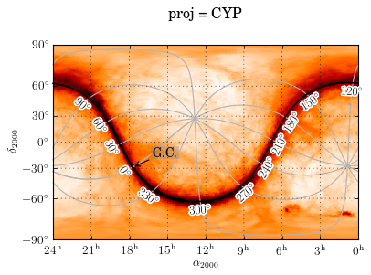
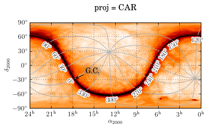
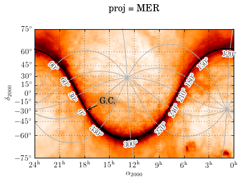
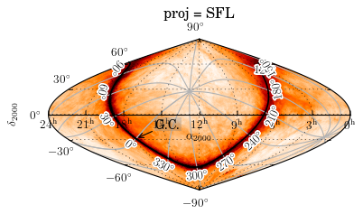
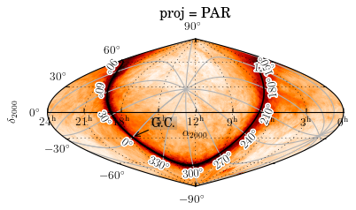

All-Sky Plot : Galactic plane in All Sky Maps¶
- requires git version of matplotlib or future release (>1.0.x)
- data file from here
import matplotlib.pyplot as plt
from pywcsgrid2.allsky_axes import make_allsky_axes_from_header, allsky_header
import matplotlib.patheffects
def do_allsky(ax, coord):
gh_gal = ax[coord].get_grid_helper()
for d in range(0, 361, 30):
axis = gh_gal.new_floating_axis(nth_coord=0, value=d,
axes=ax,
axis_direction='bottom',
allsky=True)
ax.axis["a=%d" % d] = axis
axis.set_ticklabel_direction("-")
axis.set_axislabel_direction("-")
axis.toggle(all=False)
axis.get_helper().set_extremes(-90,90)
axis.line.set_color("0.7")
axis.set_zorder(2.)
gh_gal.locator_params(nbins=9)
axis = gh_gal.new_floating_axis(nth_coord=1, value=0,
axes=ax,
axis_direction='bottom',
allsky=True)
from mpl_toolkits.axisartist.floating_axes import ExtremeFinderFixed
#glon_min, glon_max = -180+0.001, 180
glon_min, glon_max = 0, 360 - 0.001
axis.get_helper().set_extremes(glon_min, glon_max)
gh_gal.grid_finder.extreme_finder = ExtremeFinderFixed((glon_min, glon_max, -90, 90))
axis.set_ticklabel_direction("-")
axis.set_axislabel_direction("-")
axis.set_zorder(5.)
axis.toggle(all=False, ticklabels=True)
axis.line.set_linewidth(1.5)
ax.axis["b=0"] = axis
ef = matplotlib.patheffects.withStroke(foreground="w", linewidth=3)
axis.major_ticklabels.set_path_effects([ef])
ax.grid()
ax["gal"].annotate("G.C.", (0,0), xycoords="data",
xytext=(20, 10), textcoords="offset points",
ha="left",
arrowprops=dict(arrowstyle="->"),
bbox=dict(fc="0.5", ec="none", alpha=0.3))
return ax
import pywcsgrid2.healpix_helper as healpix_helper
def get_LAB_healpix_data():
import pyfits
fname = "LAB_fullvel.fits"
f = pyfits.open(fname)
#ordering = f[1].header["ordering"]
nside = f[1].header["nside"]
data = f[1].data["temperature"]
healpix_data = healpix_helper.HealpixData(nside, data.flat,
nested=False, flipy=True,
coord="gal")
return healpix_data
if 1:
proj_list = ["CYP", "CEA", "CAR", "MER", "SFL", "PAR", "MOL", ]
DO_HEALPIX = True
if DO_HEALPIX:
healpix_data = get_LAB_healpix_data()
else:
healpix_data = None
for proj in proj_list:
fig = plt.figure()
rect = 111
coord, lon_center = "fk5", 180
header = allsky_header(coord=coord, proj=proj,
lon_center=lon_center, cdelt=0.2)
ax = make_allsky_axes_from_header(fig, rect, header, lon_center=lon_center)
ax.set_title("proj = %s" % proj, position=(0.5, 1.1))
do_allsky(ax, "gal")
if healpix_data is not None:
d = healpix_data.get_projected_map(header)
im = ax.imshow(d**.5, origin="lower", cmap="gist_heat_r")
c1, c2 = im.get_clim()
im.set_clim(c1, c2*0.8)
plt.show()
[source code, hires.png, pdf]
{kind=link}

[source code, hires.png, pdf]
{kind=link}

[source code, hires.png, pdf]
{kind=link}

[source code, hires.png, pdf]
{kind=link}

[source code, hires.png, pdf]
{kind=link}

[source code, hires.png, pdf]
{kind=link}

[source code, hires.png, pdf]
{kind=link}